Acculturation Machine
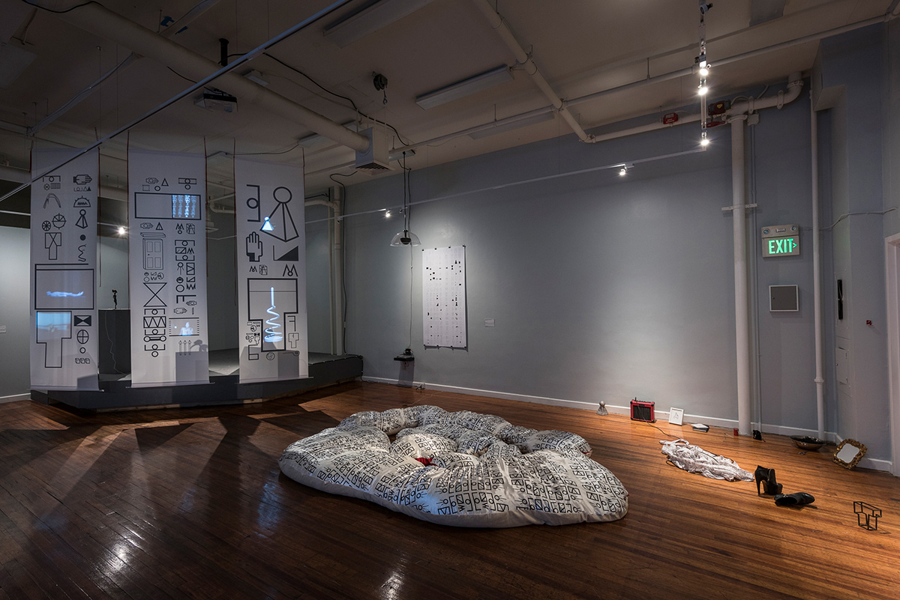
Language Writes Myth Writes Reality, 2012–present, is an ongoing, ever-evolving multimedia project composed of four principal works: Acculturation Machine, 2015–present; Enculturation Machine: Or, The Way Mummy Talks, 2015; Vivências, 2015; and Syllabary, 2013–present. Together, these works attempt to encapsulate different aspects of culture, gender, technology, and the sense of alienation experienced by the immigrant.
Acculturation Machine
In Acculturation Machine, participants were invited to touch bronze-cast sculptures hardwired to a computer, triggering projections and sound upon contact. The work places the participant in an exploratory mode. The sounds and images that emerge as the sculptures are touched create denotative connections to each object.
Together, the installation functions as a physical-computing interface. It offers the participant the liminal space of the curious foreigner. Acculturation Machines are an ongoing project and are largely site-specific.
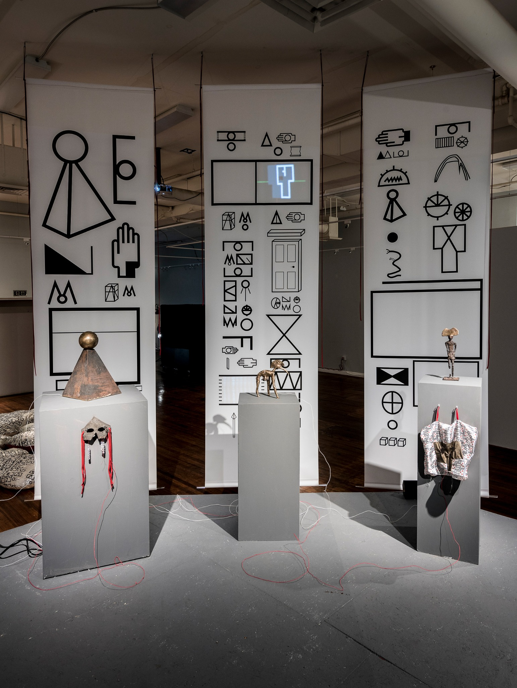
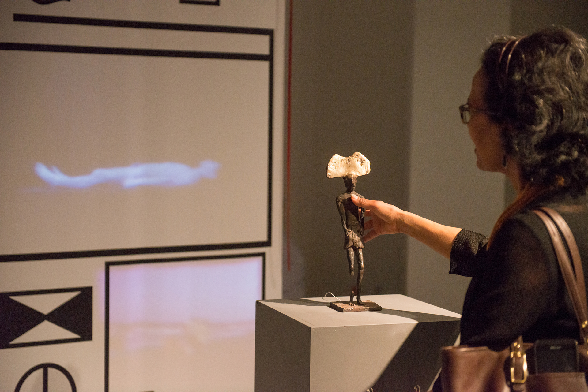
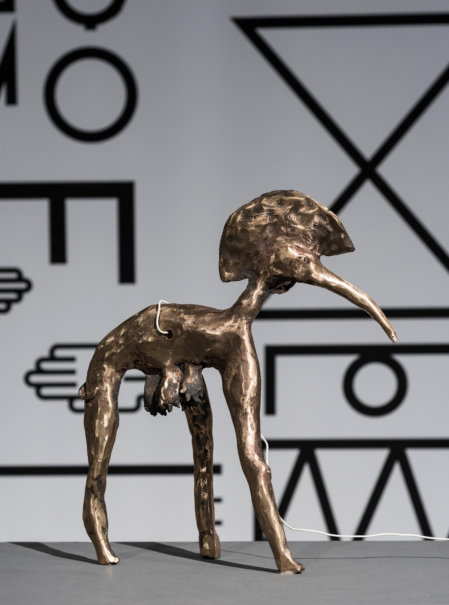
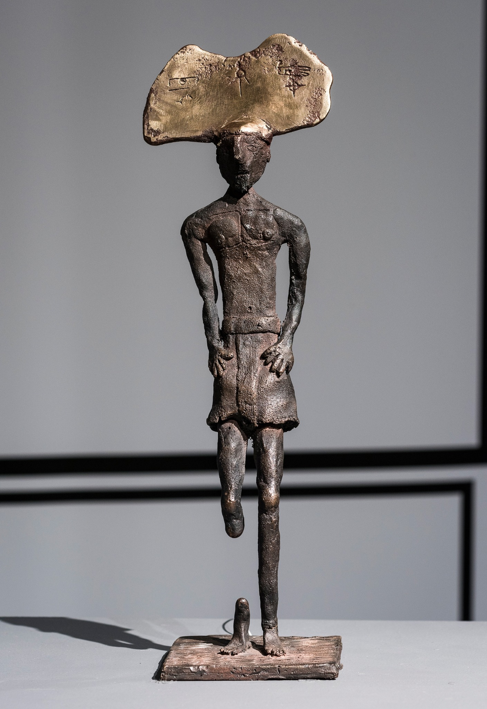
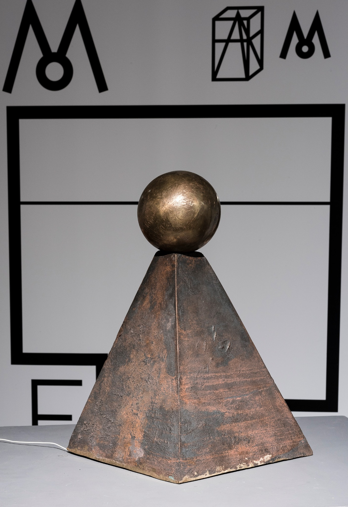
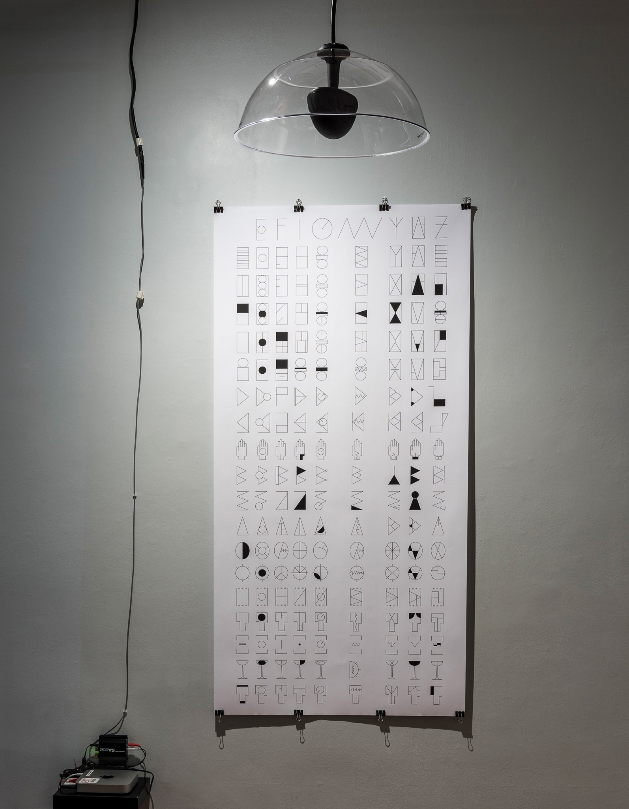
Enculturation Machine: Or, The Way Mummy Talks
The artist circled the space about three times. He then sat on the floor with his back to the audience and began pulling and cutting his hair with scissors, occasionally looking at the mirror in front of him.
He followed this action by picking up a marine-blue book and reading a creation myth in an unknown language original to the work, translating the poem every few lines. After finishing the reading and translation, he began mummifying himself with originally printed cotton fabric. As it became impossible to complete the mummification alone, he asked an audience member for assistance, who eagerly finished the process. The artist then lay on the gallery floor, mummified, for approximately two hours.
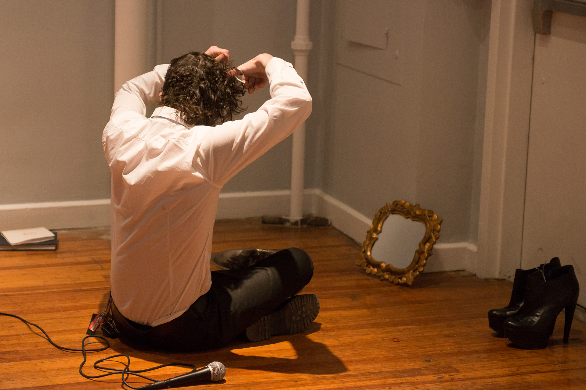
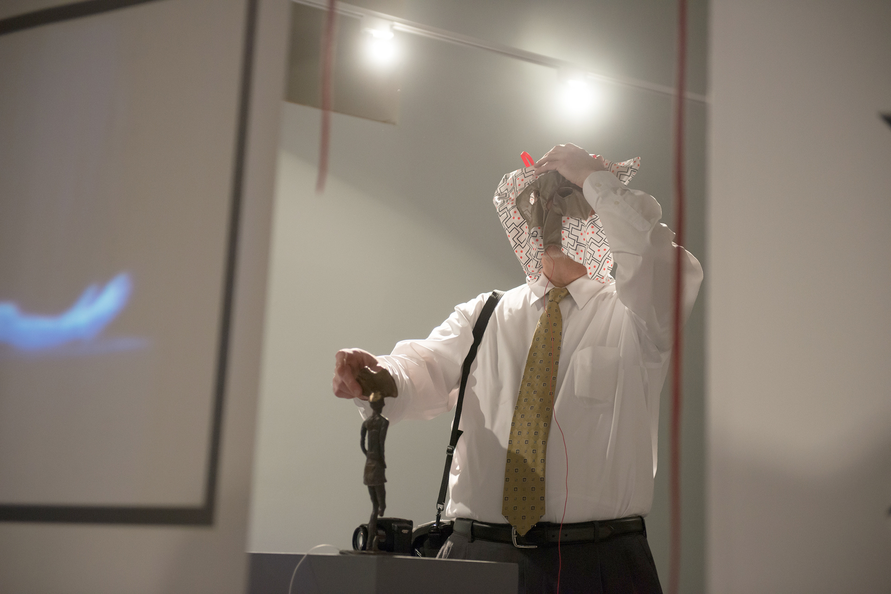
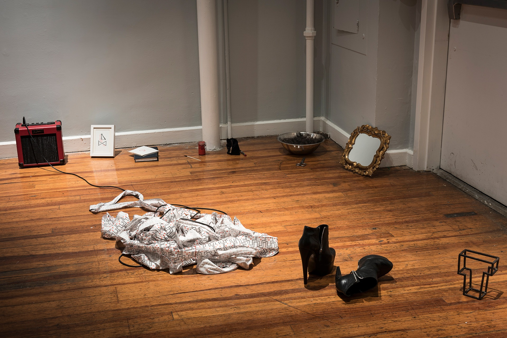
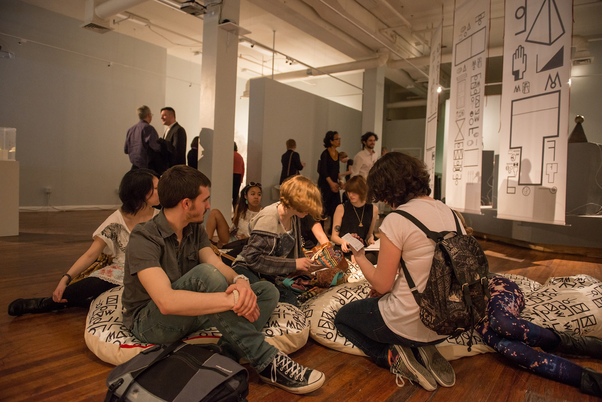